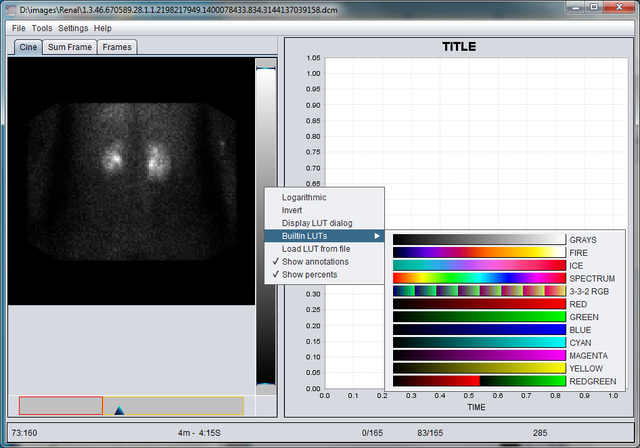

Welcome to ROI-master GitHub Pages.
Introduction
Roim is an image processing application. It is designed to speedup process of implementing software for processing nuclear medicine (hereinafter NM) data. This development was inspired by ImageJ - image viewer and also written in Java to maintain platform independence, hovewer sometimes by the price of performance. The library is designed to be vendor neutral and should not be limited to support only NM and for the time being it is tested with NM/DR/DXR/CT/PET/MR files. It implements several algorithms, screen primitives and controls to extract, process and display biomedical information.Namely:
- Region of interest (hereinafter ROI) - is the core tool. Currently supported are rectangular, elliptic and free form (aka hand-drawn) types. Generally, following operations can be applied to a ROI: a typical set of affine transforms move, flip, rotate, some ROIs can be reshaped, delete, pin (cannot get moved nor changed), etc. and a set of characteristics can get extracted. Among them area (in pixels and cm), integral density (i.e. arithmetic sum of pixel values), min/max/avg pixel. In the case of multiframe image - often seen in NM - this set of information will be extracted out of all the frames and then one will have a possibility to build and display curves like "density over time";
- Ruler - basic tool to measure image details;
- Profile - by means of Profile it is possible to visualize 2D distribution of pixel density (profile) over a rectangular area;
- ROI calculator - implements basic algebraic operations on ROIs such as: summation, subtraction of ROIs, shift to a constant.
- Chart control employs primitives of JFreeChart library and is designated to visualize series as curves, extract numeric information and finally
- Curve fitting tool - is capable of fitting experimental data with linear or exponential polynomials using the method of least squares. It is not seldom acquisition ends earlier than a particular event takes place, for instance a half excretion time in the case of renal obstruction. Using this tool it becomes possible to extrapolate experimental data in many cases achieving acceptable approximation of missing parameter. Fit curves are updated as you move marker(s) or change source ROI. And yet it is posible to export resulting data set as image or comma separated values
LUT Control
The picture below shows LUT control in the action with open menu. A number of options are available to made reading as much comfortable as possible. Beyond appying LUT to an image it is possible to use logarithmic function to translate image pixels to screen luminosity (actually sigmoid is used), inverted scales and yet there is a form displaying image's histogram accompanied with live W/L translation curve. Window width and level can be adjusted using control using knobs on the bar control, displayed values are either in arbitrary units or percents. Frame Selector
The Frame selector is meant for navigating through the image. Depending on image type it measures either time or space. Time scale can show milliseconds from either beginning of the whole study or a particular phase (for multiphase studies only). Of course, there is a mode in which it operates purely with frames.Application

This application is designed to work with data of dynamic studies such as renal clearance or gastric emptying. The screen layout is composed of two main elements:
- Image view - displaying source image either as a serie of frames (shown) or a composite image - an algebraic "pixel-by-pixel" sum of all frames of the serie or a specified range and
- Chart view - alows for investigation of curves
Implemented mechanism of displaying directory containing DICOM images of the same modality as one image.
SIC: application requires Java 8
Images
Several anonymized DICOM files are available for informational purposes:- Dynamic renal study
- MUGA - myocardial gated equilibrium study
- Cholecystographic study (aka HIDA) - dynamic gallbladder study
- Reconstructed thorax (3D)
Visit project wiki for further details.
Good luck.
I.
I.